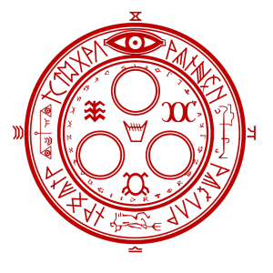

- Modern logging with C++ and Elasticsearch - 12 October 2015
- F# Light - 27 August 2015
- Selling dependent types - 27 March 2015
- Boost Application Interprocess with Qt Quick - 7 February 2015
- Idris YAML (Usage) - 19 January 2015
- Python SmartShell - 29 December 2014
- Modern C++ and Qt Widgets (basics) - 10 December 2014
- hjsmin JavaScript minifier for Hakyll - 30 October 2014
- Imperative bits of Haskell - 20 October 2014
- Async Reactive Haskell - 19 August 2014
- Idris Effects - 27 June 2014
- Read/Write Excel from F# with NPOI - 25 June 2014
- Blog architecture - 20 June 2014
- Failess : CSS EDSL in FSharp - 1 January 2013
